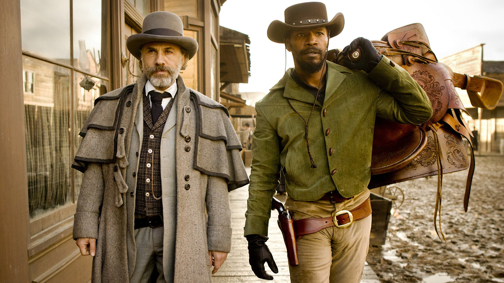

Джанго освобожденный
«Джанго освобожденный» (англ. Django Unchained) — художественный фильм 2012 года режиссёра Квентина Тарантино в жанре спагетти-вестерн. Главную роль исполняет Джейми Фокс, в образ его ключевого напарника перевоплотился Кристоф Вальц. Картина, повлиявшая на Тарантино при создании «Джанго освобождённого», — итальянский вестерн «Джанго». Заглавную роль там исполнил Франко Неро, который ненадолго появляется и у Тарантино. Мировая премьера состоялась 25 декабря 2012 года. Ещё до официальной премьеры некоторые критики, уже увидевшие новый проект Тарантино, включили его в собственные списки лучших фильмов года. Кристоф Вальц и Леонардо Ди Каприо за свои актёрские работы были удостоены нескольких премий сообществ кинокритиков со всего США, а сама картина была выдвинута в четырёх номинациях на «Золотой глобус», включая за лучший драматический фильм года. Победила в двух категориях: «Лучшая мужская роль второго плана» для Кристофа Вальца и «Лучший сценарий» для Квентина Тарантино. На 85-й церемонии вручения премии «Оскар» картина была представлена к получению пяти статуэток, включая за лучший фильм года, и выиграла в тех же категориях, что и на «Золотом глобусе» — «Лучшая мужская роль второго плана» у Кристофа Вальца и «Лучший сценарий» у Квентина Тарантино.
Действие фильма начинается в 1858 году, за три года до начала Гражданской войны. Двое братьев-работорговцев гонят купленных ими на аукционе в Техасе пятерых чернокожих рабов-мужчин на Дальний Юг. Среди рабов находится Джанго (Джейми Фокс), который в наказание за побег был высечен кнутом и продан предыдущим хозяином на аукционе отдельно от его жены Брунхильды (Керри Вашингтон). Ночью в лесу группа встречается с доктором Кингом Шульцем (Кристоф Вальц), иммигрантом из Германии и охотником за головами, использующим свою бывшую профессию дантиста как прикрытие. Шульц хочет выкупить Джанго и, получив отказ, убивает одного из братьев Спек, а второго со сломанной ногой оставляет на растерзание освобождённым рабам. Прибыв следующим утром в небольшой городок и осев в первом же баре, подняв при этом изрядный шум, Доктор сообщает Джанго, что разыскал его, дабы тот помог ему опознать троих братьев Бриттл — кровожадных убийц, которые ранее служили надсмотрщиками на той же плантации, где когда-то трудился Джанго. В награду за помощь доктор, человек презирающий рабство, обещает полностью освободить Джанго из рабства и заплатить 75 долларов. Шульц и Джанго находят братьев в расположенном неподалёку поместье «Большого папы» Спенсера Беннетта (Дон Джонсон), где Джанго убивает двоих членов банды, а подоспевший Шульц пристреливает третьего. Джанго неожиданно проявляет невиданную ловкость в обращении с огнестрельным оружием, и после убийства братьев Бриттл Шульц, начинающий чувствовать ответственность за жизнь и благополучие Джанго, делает ему предложение сотрудничать с ним в охоте на особо опасных преступников, которое Джанго принимает, и предлагает помощь в поиске Брунхильды.
Долгое время ходили слухи, что главную роль в картине исполнит Уилл Смит, но тот отказался. Актёр и режиссёр не сошлись во мнении о том, кто должен убивать Кэлвина Кэнди. Уилл Смит настаивал на том, что это должен сделать Джанго, Квентин Тарантино требовал, чтобы это сделал именно доктор Шульц, так как убийство Кэлвина Кэнди Джанго было бы расценено как обыкновенная месть, но убийство «белого» «белым» несёт в себе фундаментальный смысл перемен, в чём потом и выразилась «война белых» — Гражданская война в США 1861—1865 годов и освобождение от рабства. После просмотра Уилл выразил своё восхищение фильмом. Были и другие претенденты — Идрис Эльба, Крис Такер и Терренс Ховард, которые также не смогли сыграть в фильме. В итоге роль Джанго исполнил Джейми Фокс. На роли второго плана были заявлены Кристоф Вальц, Леонардо Ди Каприо, Керри Вашингтон, Сэмюэл Л. Джексон, Энтони Лапалья, Джозеф Гордон-Левитт, Саша Барон Коэн и некоторые другие. Первое время ходили слухи, что роль персонажа по имени Эйс Вуди сыграет Кевин Костнер, однако он отказался и Тарантино быстро нашёл ему замену — Курта Рассела. Тем не менее, в начале мая 2012 стало известно, что Курт Рассел, Саша Барон Коэн и Энтони Лапалья также покинули проект.
Во время съёмок одной из сцен Ди Каприо случайно разбил рукой стеклянный стакан, но проигнорировал боль и доиграл сцену до конца, чем восхитил режиссёра, потому что эпизод получился мощнейшим. В фильме принял участие итальянский актёр Франко Неро, исполнив эпизодическую роль Америго Вассеппи с иронической отсылкой к его роли в фильме «Джанго» Серджо Корбуччи: когда Джанго представляется: «Д-Джанго», добавляя при этом: «„Д“ не произносится», герой Неро улыбается и говорит: «Я в курсе». «Джанго» — первый фильм Тарантино без монтажёра Салли Менке, которая умерла в 2010 году. Фильм был смонтирован Фредом Раскином, который работал помощником монтажёра в двух частях «Убить Билла». Синий костюм, который Джанго выбрал себе, когда исполнял роль слуги Шульца, был вдохновлён картиной Томаса Гейнсборо «Мальчик в голубом», написанной в 1770 году.